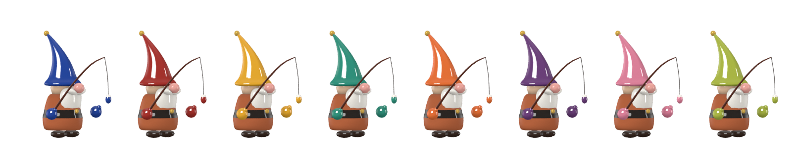
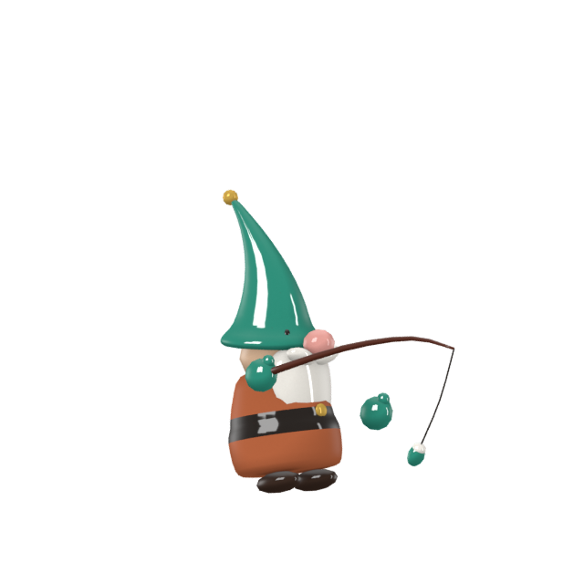

Lot 4 · Angler gnome, garden terracotta · Zoner / puller
MOSS
weight0.9run7 u/sfull hop3.9 utriangles4,876rigid parts7
Livery test: all eight player colours

Livery zone: Hat, mitts, float. Coat is raw terracotta, belt is ink.
How it reads
A triangle. The hat is half his height, droops backward, and ends in a bell. The rod doubles his width on one side only.
Expression
- No visible eyes most of the time: they sit under the brim. Emotion is carried by the HAT.
- Idle: checks the line, the hat tip nods.
- Surprised or hit: hat stands straight up for 10 frames.
- Fishing (down-special): sits, hat tips forward over his face.
Pose
- Leans back before every cast, forward after it. The rod tip leads, the line follows on a delay.
- Cast: rod snaps from behind the hat to 42 degrees forward in 3 frames.
- Yank: rod whips overhead; the catch travels the arc of the line.
Parts (one rigid bone each, no skin weights)
body (beard and nose are part of it), hat, 2 mitts, 2 boots, rod (with line and float)

Cast (neutral special)